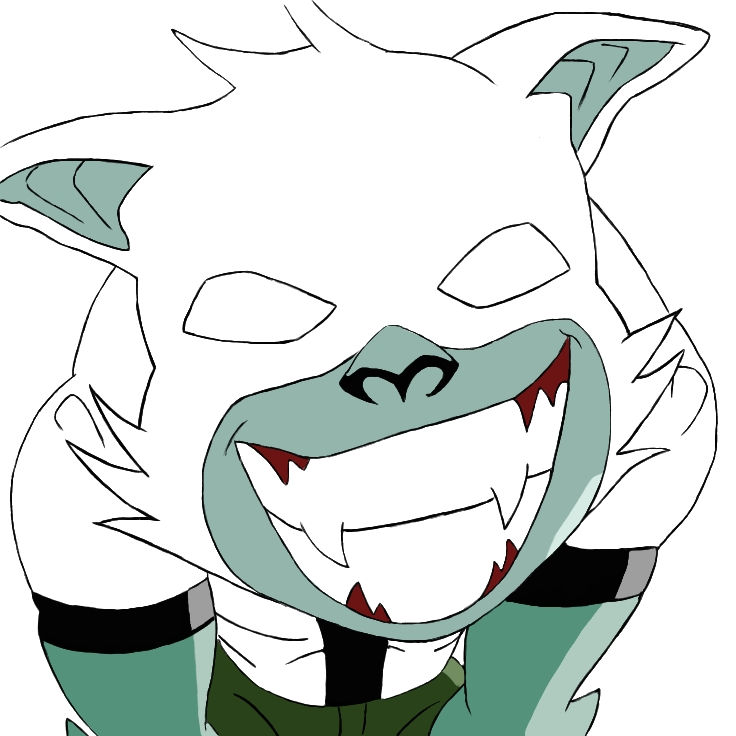
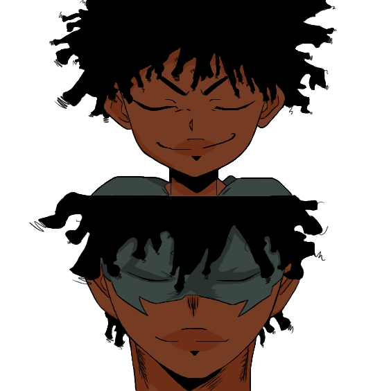
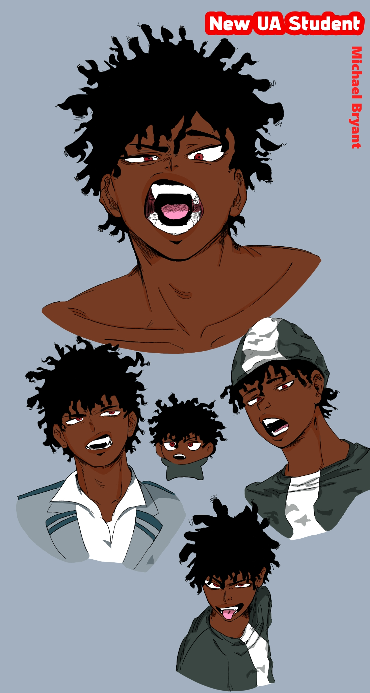
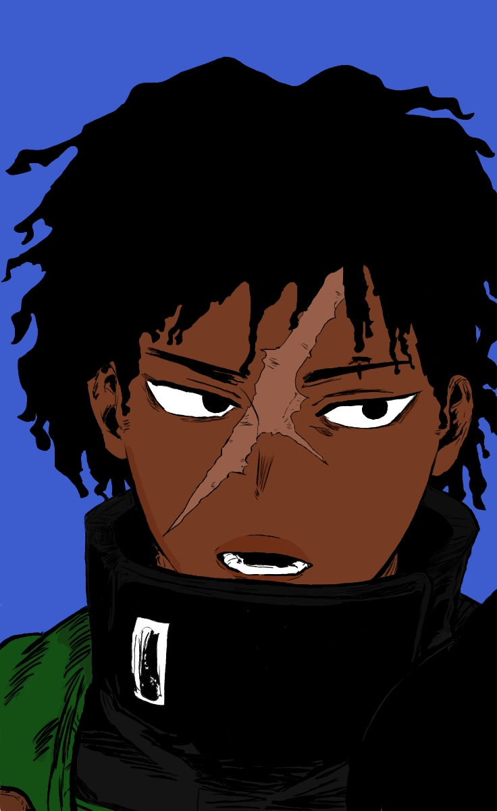
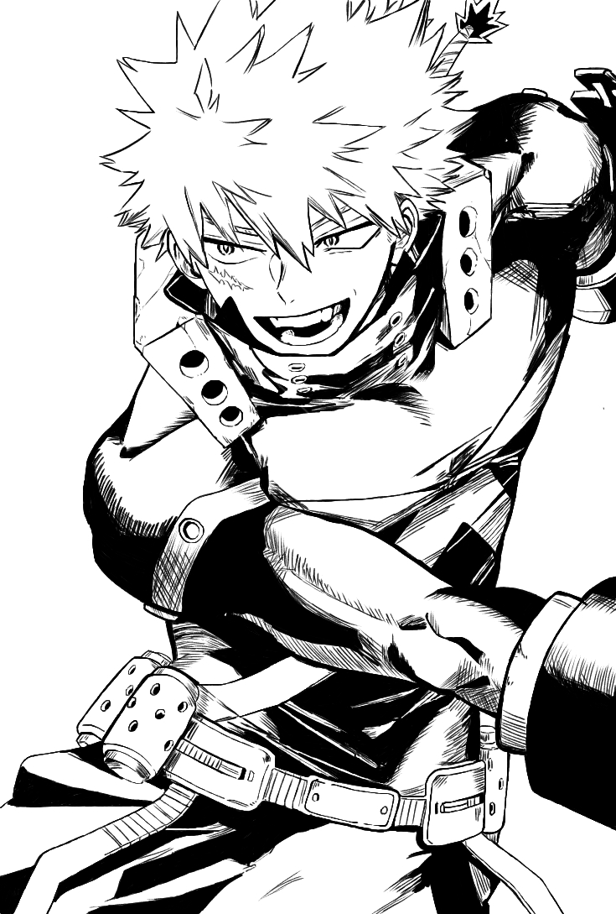
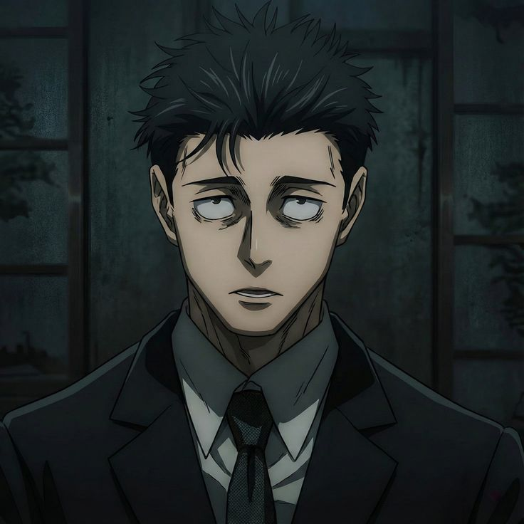
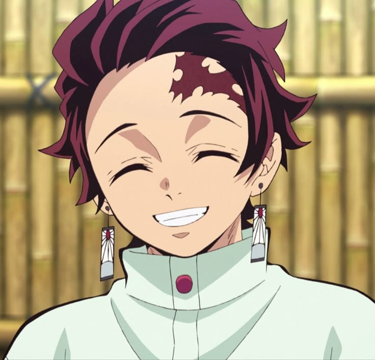

Anime Art Portfolio
This gallery showcases a combination of my own personal anime artwork, along with a few examples showcased through the website. Many of my own character designs are created using digital drawing tools like ibisPaint.

Image by Michael Bryant
Wolf Ben Design
A character from an old cartoon show called Ben 10, the design focuses on exaggerated facial features, sharp teeth, and expressive posing. The goal was to recreate an iconic character using strong, contrasting colors and line work. The gradient of colors and shading in this piece creates depth in the exaggerated position, bringing it to life.

Image by Michael Bryant
Original Character 1
An originally made character by me that was a rough idea of my character in 2 stages in life (younger & teen). Design is focused on a calm and happy tone shown with the facial expression through the eyes and the placement of the mouth and nose. As well as lighting/shading in soft areas to not seem overly dramatic and serious.

Image by Michael Bryant
Original Character 2
An originally made character by me that is a teenage variant of Original Character 1. The design for this character is focused on many different facial expressions, positioning, and color theory. An example of each skill combined. Adding shadows in areas to show positioning of the character, as well as the position of the mouth and eye shape, to give different expressions for the character in each position. Different positions or expressions require their own shadow/lighting and colors.

Image by Michael Bryant
Original Character 3
The original character was made from an anime called My Hero Academia. Design is focused on the same color palette as the original character from the show, but it made the hair and skin color like an African American character in anime. As well as the position of the mouth and eyes to give a relaxed look. Not adding too much shadowing or darker colors to be too serious or dramatic.

Image by Michael Bryant
My Hero Academia Character Adult Bakugo
This character is also from the show My Hero Academia, but as an aged time skip character. Design is focused on line work and shadows to add an older and muscular character design. As well as practicing different poses for my characters, I even practice facial expressions in those positions.

Image by creepyheadmonster (Pinterest)
Jujutsu Kaisen Character
An original character from the show Jujutsu Kaisen that shows a great example of a dark tone, pose, colors, and expression. Design is focused on a calm and dark tone, where the eyes are lowered with shadows and heavy dark colors. The combination of facial placement, dark lighting/shading, and a cooler color palette gives the character's emotion a more realistic feeling.

Image by Astrs211 (Pinterest)
Demon Slayer Character
An original character from the show Demon Slayer that shows a great example of a bright and happy tone, pose, colors, and expression. Design is focused on an energetic and happier tone, where the eyes may not be large, but the placement of the other features and how they are exaggerated gives a happy expression. The combination of facial placement, bright lighting/shading, and a warm color palette for this character gives a more realistic feeling of happiness.